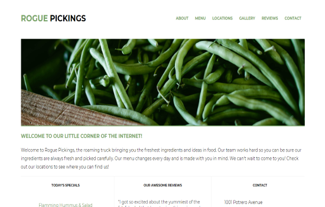
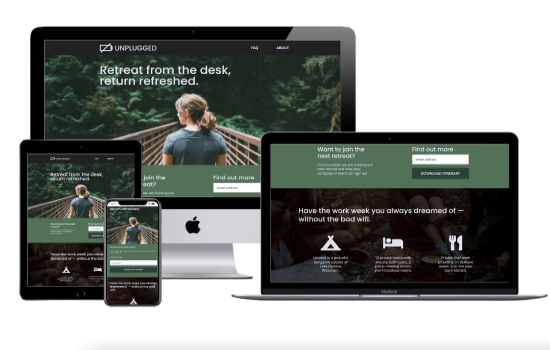
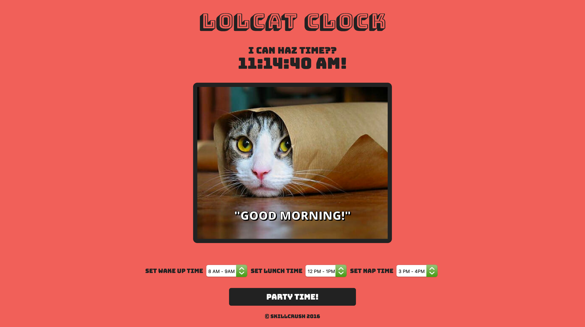
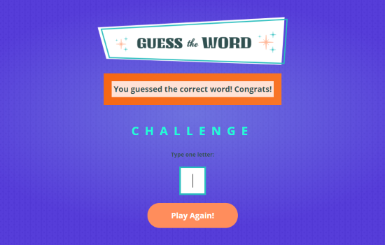
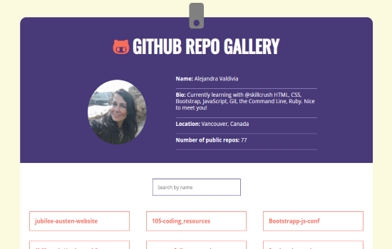
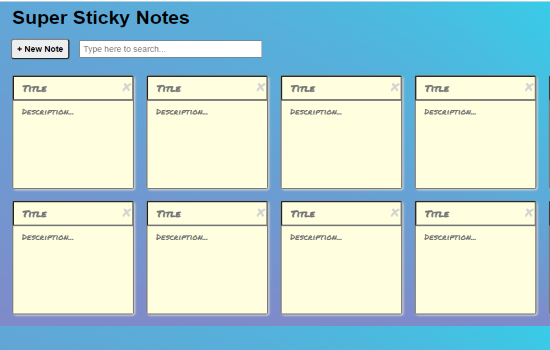

<?php
/**
 * The template for displaying pages
 *
 * @package WordPress
 * @subpackage Skillcrush_Starter
 * @since Skillcrush Starter 2.0
 */

get_header(); ?>

<section class="portfolio">
	<div class="main-content">
		<?php while ( have_posts() ) : the_post(); ?>
    <h2 class="entry-title"><a href="<?php the_permalink(); ?>"><?php the_title(); ?></a></h2>

    <div class="gallery">
          <!-- project section -->

          <!-- project one  -->
          <div class="gallery-item">
            <a href="https://alejandravaldivia.github.io/rogue-pickings-responsive/" target="_blank">
              
            </a>
            <a href="https://alejandravaldivia.github.io/rogue-pickings-responsive/" target="_blank">
              <h4>Rogue Pickings Project</h4>
            </a>
            <p>Here is an example of a landing page for a local food truck. Having an online presence in
              today's business world is essential to succeed. Tools used: HTML5, CSS3 and Photoshop.
            </p>
          </div>

          <!-- project two  -->
          <div class="gallery-item">
            <a href="https://alejandravaldivia.github.io/skillcrush-unplugged-retreat-responsive-websites/" target="_blank">
              
            </a>
            <a href="https://alejandravaldivia.github.io/skillcrush-unplugged-retreat-responsive-websites/" target="_blank">
              <h4>Unplugged Retreat project</h4>
            </a>
            <p>Responsive, mobile-first Website for a retreat location. Tools used: HTML5, CSS3
              and Photoshop.
            </p>
          </div>

          <!-- project three  -->
          <div class="gallery-item">
            <a href="https://alejandravaldivia.github.io/lolcat-clock/" target="_blank">
              
            </a>
            <a href="https://alejandravaldivia.github.io/lolcat-clock/" target="_blank">
              <h4>LOL Cat clock</h4>
            </a>
            <p>Interactive clock displaying cat memes depending on the time of the day.
              Tools used: HTML5, CSS3, Javascript and JQuery.
            </p>
          </div>

          <!-- project four  -->
          <div class="gallery-item">
            <a href="https://alejandravaldivia.github.io/magic-8-ball/" target="_blank">
              
            </a>
            <a href="https://alejandravaldivia.github.io/magic-8-ball/" target="_blank">
              <h4>Magic Eight Ball</h4>
            </a>
            <p>Interactive fortune-teller answers your question. It was definitely a lot of fun creating it! Tools used:
              HTML5, CSS3, Javascript, JQuery, Git and GitHub.
            </p>
          </div>

          <!-- project five  -->
          <div class="gallery-item">
            <a href="https://alejandravaldivia.github.io/guess-the-word/" target="_blank">
              
            </a>
            <a href="https://alejandravaldivia.github.io/guess-the-word/" target="_blank">
              <h4>Guess the Word Game</h4>
            </a>
            <p>Have fun trying to guess the word! Tools used: HTML5, CSS3, and JavaScript, Git and GitHub.
            </p>
          </div>

          <!-- project six  -->
          <div class="gallery-item">
            <a href="https://alejandravaldivia.github.io/github-repo-gallery/" target="_blank">
              
            </a>
            <a href="https://alejandravaldivia.github.io/github-repo-gallery/" target="_blank">
              <h4>GitHub Repo Gallery</h4>
            </a>
            <p>This is my GitHub Repo Gallery of some of my web development projects. 
              This exercise involved fetching user data from an API, fetching repo data, 
              creating a dynamic search, and display repo info. Tools used: HTML5, CSS3, 
              JavaScript, Git and GitHub.
            </p>
          </div>

          <!-- project seven  -->
          <div class="gallery-item">
            <a href="https://codesandbox.io/s/l5-write-a-functional-component-c7xue" target="_blank">
              
            </a>
            <a href="https://codesandbox.io/s/l5-write-a-functional-component-c7xue" target="_blank">
              <h4>Name Tag Generator</h4>
            </a>
            <p>React JS project, building and rendering Data models.
              Tools used: HTML5, CSS3, JavaScript, React, Code Sandbox, Git and GitHub.
            </p>
          </div>

          <!-- project eight  -->
          <div class="gallery-item">
            <a href="https://codesandbox.io/s/l14-sticky-notes-app-final-0m0kl?file=/src/index.css&resolutionWidth=535&resolutionHeight=675"
              target="_blank">
              
            </a>
            <a href="https://codesandbox.io/s/l14-sticky-notes-app-final-0m0kl?file=/src/index.css&resolutionWidth=535&resolutionHeight=675"
              target="_blank">
              <h4>Sticky Notes App</h4>
            </a>
            <p>React JS project to create your own sticky notes according to your needs. Tools used: HTML5, CSS3 and JavaScript, React JS, Code Sandbox, Git and GitHub.
            </p>
          </div>
        </div>

			
			<div class="page-portfolio">
        <figure class="img"><a href="<?php the_permalink(); ?>"></a></figure>
				<?php the_content(); ?>
			</div>
		<?php endwhile; ?>
	</div>

	<?php get_sidebar(); ?>
</section>

<?php get_footer(); ?>
